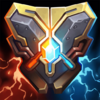
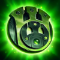
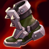

Soporte
/
Tanque
Dificultad Moderada
HABILIDADES


PASIVA • GOLPES CONMOCIONANTES
Los ataques básicos de Braum aplican Golpes Conmocionantes. Una vez que se aplique la primera acumulación, los ataques básicos de aliados también acumulan Golpes Conmocionantes. Al alcanzar 4 acumulaciones, el objetivo queda aturdido y recibe daño mágico. No pueden recibir acumulaciones nuevas durante los siguientes segundos, pero reciben daño mágico adicional de los ataques de Braum.
1 • RIGOR DEL INVIERNO
Braum lanza hielo de su escudo, lo que ralentiza e inflige daño mágico.Aplica una acumulación de Golpes Conmocionantes.
2 • DETRÁS DE MÍ
Braum salta hacia un campeón o súbdito aliado. Al llegar, Braum y el aliado obtienen armadura y resistencia mágica durante algunos segundos.
3 • INQUEBRANTABLE
Braum levanta su escudo en una dirección durante varios segundos e intercepta todos los proyectiles para destruirlos en el proceso. Repele el daño del primer ataque por completo y reduce el daño de todos los ataques subsecuentes en esa dirección.
DEFINITIVA • FISURA GLACIAL
Braum golpea con fuerza el piso y lanza por el aire a los enemigos cercanos y en línea frente a él. A lo largo de la línea permanece una fisura que ralentiza a los enemigos.
CONFIGURACIÓN
OBJETOS
-

Convergencia de Zeke
2700+40 Armadura
+40 Resistencia Mágica
+150 Maná Máximo
+10 Aceleración de Habilidad
MENSAJERO: Lanzar tu definitiva te envuelve en una tormenta de nieve y potencia los ataques de un aliado cercano por 10 seg. Tu tormenta de nieve ralentiza un 20% y los ataques de tu aliado queman a los enemigos, lo que inflige un 30% del daño de ataque como daño mágico adicional a lo largo de 2 seg. (Potencia los ataques del aliado con mayor daño)
PACTO DEL FUEGO CONGELADO: Ralentizar a un enemigo en llamas con tu tormenta hace que inflija 60 de daño mágico por segundo y ralentice un 50% por 3 seg. -

Juramento del Protector
2700+350 Vida Máxima
+40 Armadura
+10 Aceleración de Habilidad
PROTECTOR: Mejora tu guardia cuando estés junto a un campeón aliado. Si tú o tu aliado reciben daño de un campeón, monstruo o torreta, los dos recibirán un 125 de escudo + 20% de Vida adicional + 15% de Poder de Habilidad y 20% de Velocidad de Movimiento durante 1.5 seg. (30 seg de Enfriamiento).
-

Placa del Hombre Muerto
2800+250 Vida Máxima
+50 Armadura
IMPLACABLE: +5% de Velocidad de Movimiento.
IMPULSO: Moverte genera impulso, lo que otorga hasta 50 de Velocidad de Movimiento al llegar a 100 acumulaciones. Atacar elimina todas las acumulaciones de Impulso. Las acumulaciones decaen cuando se afecta la velocidad de movimiento.
GOLPE APLASTANTE: Los ataques infligen hasta 100 de daño mágico adicional según el Impulso consumido. Los ataques cuerpo a cuerpo con el máx. de Impulso ralentizan un 50% durante 1 seg. -

Fuerza de la Naturaleza
2850+350 Vida Máxima
+45 Resistencia Mágica
TORMENTA: +5% de Velocidad de Movimiento.
ABSORBER: Recibir daño de habilidades otorga 6 de Velocidad de Movimiento y 6 de Resistencia Mágica durante 5 seg (se acumula hasta 5 veces por un máximo de 30 de Velocidad de Movmiento y 30 de Resistencia Mágica).
Cada habilidad única otorga 1 acumulación. -

Presagio de Randuin
2800+400 Vida Máxima
+55 Armadura
BLINDADO: Reduce el daño recibido de golpes críticos un 15%.
ACERO FRÍO: Reduce la velocidad de ataque de los enemigos en un 15% durante 1.5 seg al recibir un ataque. -

Punteras de Acero Revestidas
1000CALZADO: +40 de Velocidad de Movimiento.
MEJORADO: +15 de Armadura.
BLOQUEADO: Bloquea un 15% del daño de ataques.
CARRERA (ACTIVA): Aumenta la Velocidad de Movimiento un 15% durante 3 seg. Infligir o recibir daño de campeones desactiva los efectos de Carrera. (60 seg de enfriamiento). -

Encantamiento de Redención
500REDENCIÓN (ACTIVA): Revela una posición y tras 2.5 seg un rayo de luz cura a los aliados por 25-375 mientras que inflige a los enemigos un 10% de su Vida Máxima como daño verdadero. Los súbditos y monstruos reciben 250 de daño. (60 seg de Enfriamiento).
Se puede usar al estar muerto.
Este efecto se reduce en un 50% si el objetivo se vio afectado por otra redención en los últimos 20 seg.
RUNAS Y HECHIZOS
-
Fuente de Vida
Alcanzar a un campeón enemigo con un ataque o una habilidad los marcará. Cuando tú o tus aliados dañen a campeones marcados, tú y esos aliados se curarán. Cada aliado puede activar esta curación una vez por marca.
CURACIÓN DE ALIADO: Un 6% de tu Vida Máxima + 30% de tu Poder de Habilidad.
AUTOCURACIÓN: Un 2% de tu Vida Máxima + 10% de tu Poder de Habilidad.
DURACIÓN DE LA MARCA: 4 seg.
ENFRIAMIENTO: 6 seg para campeones cuerpo a cuerpo, 10 seg para campeones a distancia.
Las curaciones subsecuentes de otras marcas de aliados se reducen un 25%. -

Fragilidad
Reducir el movimiento de campeones enemigos hará que reciban un 5% de daño adicional durante los siguientes 5 seg.
-

Segundo Aire
Gana 5 de Vida cada 5 seg.
Después de recibir daño de un campeón enemigo, regenera 3(+1.5% de tu Vida faltante) a lo largo de los próximos 10 seg. Este efecto se duplica para campeones cuerpo a cuerpo. -

Cazador de Manada
Obtienes 2% de Velocidad de Movimiento al estar cerca de campeones aliados. Por cada aliado único con el que participes en un derribo, obtienes 50 de oro y el aliado 50 de oro.
-

Curación
ENFRIAMIENTO: 120 seg.
Restaura 80 de Vida (80-360 basado en nivel) y otorga un 30% de Velocidad de Movimiento adicional durante 1 seg para ti y para el campeón aliado cercano más herido.
La curación se reduce a la mitad para campeones que hayan recibido un efecto de curación recientemente. -

Destello
ENFRIAMIENTO: 150 seg.
Te teletransportas una distancia corta hacia delante o hacia la dirección objetivo.
CÓMO JUGAR BRAUM
Braum es un campeón de soporte de tanques. Se destaca por quedarse atrás y proteger al equipo con su gran control de multitudes, por ejemplo, Irrompible (tercera habilidad) que bloquea todas las habilidades entrantes y ataques automáticos y Detrás de Mí (segunda habilidad) que otorga resistencias adicionales a un aliado. Braum es realmente bueno en todas las etapas del juego debido a sus habilidades defensivas y su equipo seguro que le permite sobrevivir y ayudar al equipo.